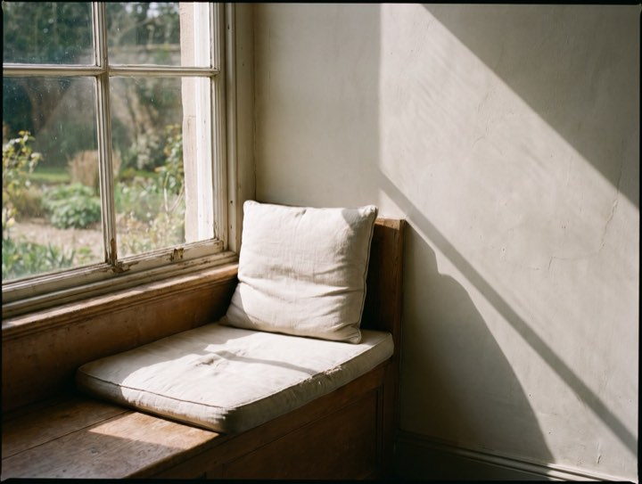

Medical · Surgical · Cosmetic
Medical dermatology, skin cancer surgery and a separate cosmetic clinic. Pathology comes back within a week and you hear it from someone who rings you, with the next appointment already booked before they hang up.
Services
Medical dermatology runs on insurance and referral. The cosmetic clinic runs separately, with its own booking and published pricing.
Screening, biopsy and Mohs micrographic surgery on site, so diagnosis and removal don't mean two separate waits.
Acne, eczema, psoriasis, rosacea and hair loss. Most insurance accepted, and biologics managed in house.
Eczema, birthmarks and adolescent acne, in appointments long enough for a child to settle.
Injectables, lasers and medical-grade skincare, with published pricing. Booked separately from medical visits.
I found something in November and was terrified. Their site said two weeks for a skin check and I got in in nine days. The biopsy and the removal happened in the same building.Gordon E. · Skin cancer patient
Process
Medical and cosmetic run on different calendars and different money. Getting this right saves you weeks.
Worried about a spot, a rash or a mole? Medical. Wanting to change how your skin looks? Cosmetic. If unsure, book medical.
Online, with insurance details taken up front, so the first visit isn't twenty minutes of paperwork.
Full-body skin checks run about thirty minutes. Anything suspicious is biopsied the same visit wherever possible.
Pathology back within a week, delivered by a person on the phone, with the next step already scheduled.
Results, from a person
The slide is read here. The person who read it rings you.



Don't sit on it. Skin checks are booking about two weeks out and we hold urgent slots every week for exactly this reason.
Most major insurance accepted. Results delivered by phone within a week, never left sitting in a portal for you to find.